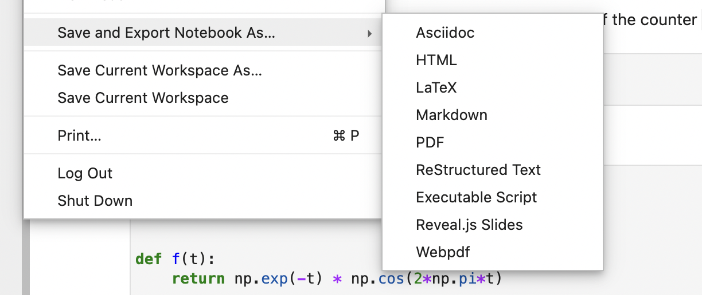
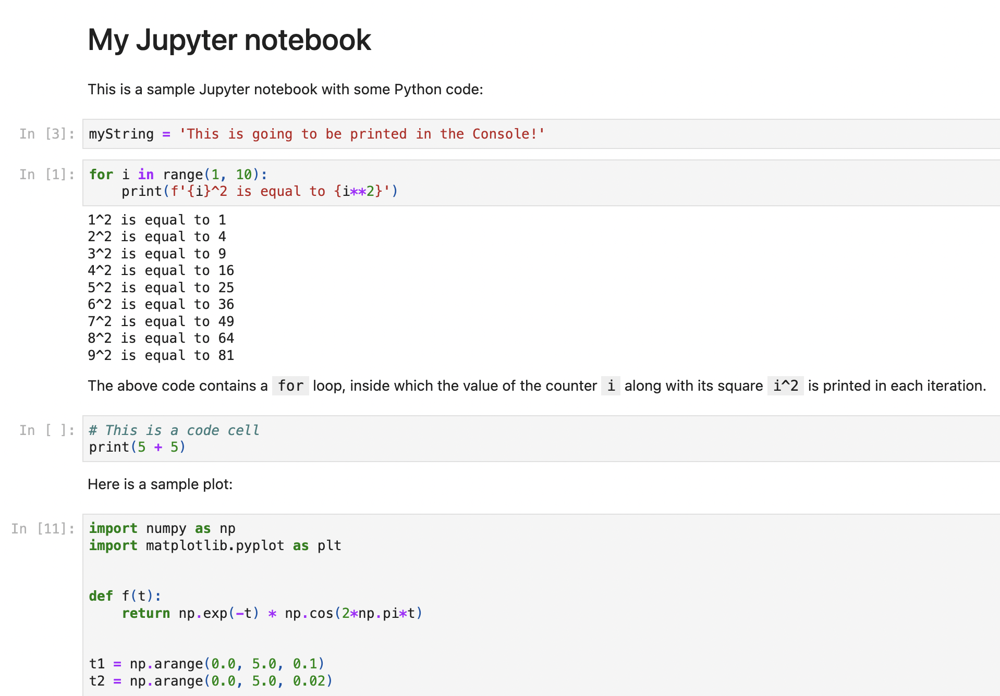
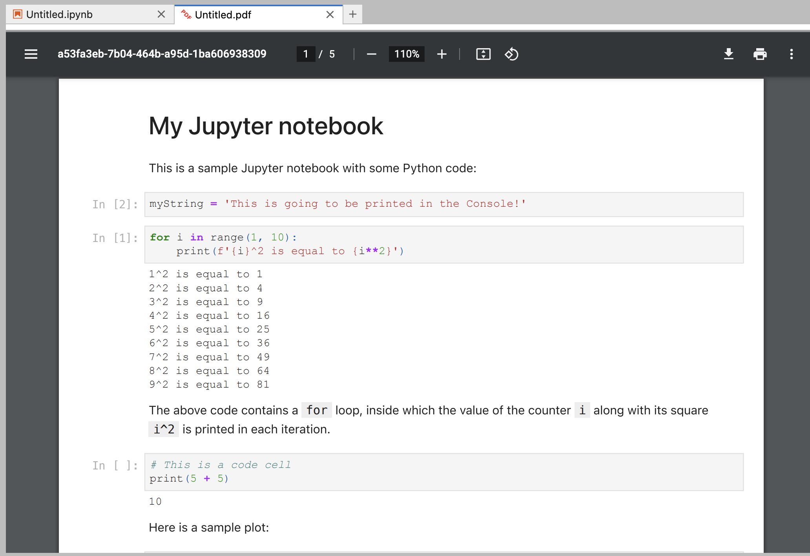
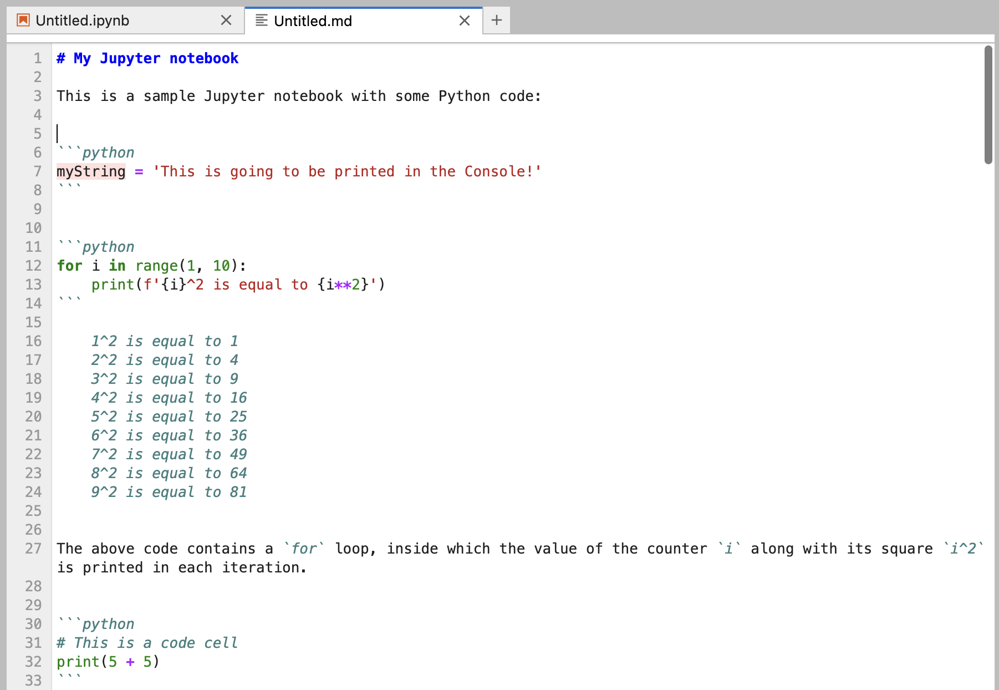
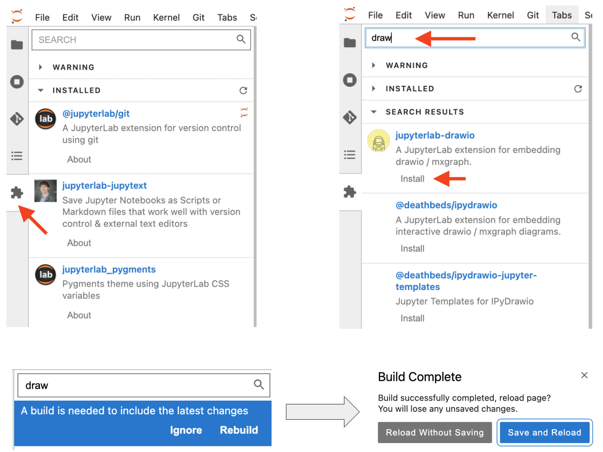

Using multiple views of the same content
In JupyterLab, you can change the way you view content in three main ways:
Opening an additional view of the same notebook.
Opening an additional view of the output of a specific cell.
Render cell output on the side of a code cell instead of below it.
Exporting notebooks
To share your work with others, it is possible to export your notebook to various formats in JupyterLab, including:
- HTML
- PDF
- Markdown

1. Notebook to HTML

2. Notebook to PDF

3. Notebook to Markdown

JupyterLab Extension Manager
